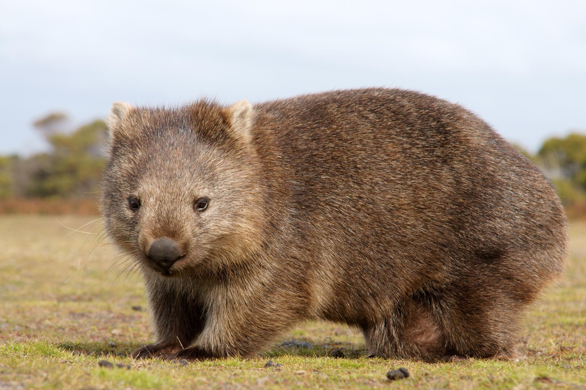

Hi, it is nice to see you here. In our latest Blog we would like to introduce to you such an incredible animal as wombat.
Wombats are marsupials with brown, tan or grey fur and from their stubby tails to their large skulls they can measure 1.3m long and weigh 36kg. Often described as ‘stout’, ‘sturdy’ or ‘powerful’, they’re expert diggers with short, muscular legs and sharp claws.
They are adaptable and habitat tolerant, and are found in forested, mountainous, and heathland areas of southern and eastern Australia, including Tasmania, as well as an isolated patch of about 300 ha (740 acres) in Epping Forest National Park[2] in central Queensland.
| MALE | FEMALE | YOUNG | SOCIAL UNIT |
|---|---|---|---|
| jack | Jill | joey | solitary |
| GROUP | HOME | HABITAT | TAIL? |
| wisdom | Australia | grasslands | yes, about 1 inch |
| FAVOURITE FOOD | AVG. LENGTH | AVG. HEIGHT | AVG. WEIGHT |
| grass | 36-40 inches | 14-20 inches | 40-85 pounds |
| IN POUCH | RAISED BY | EYES OPEN | WALK |
| 6-8 months | mother | 2 months | 4 months |